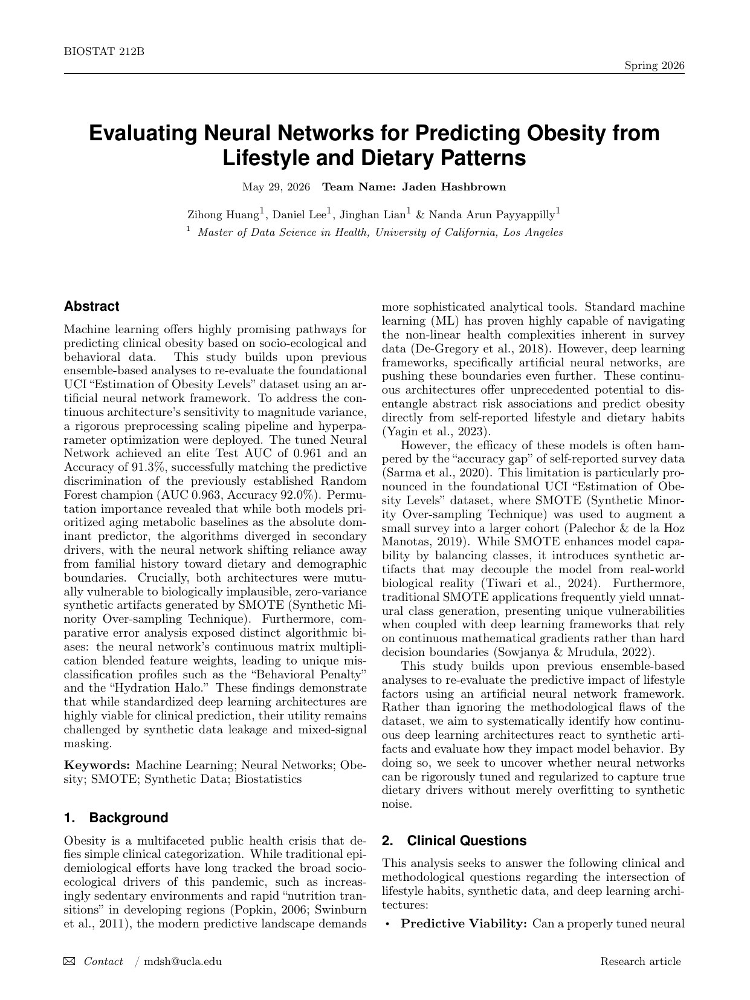
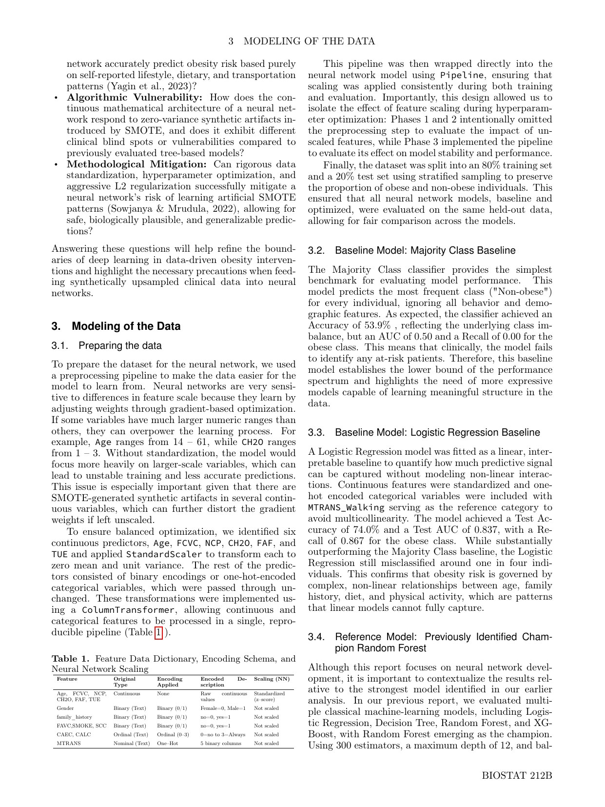
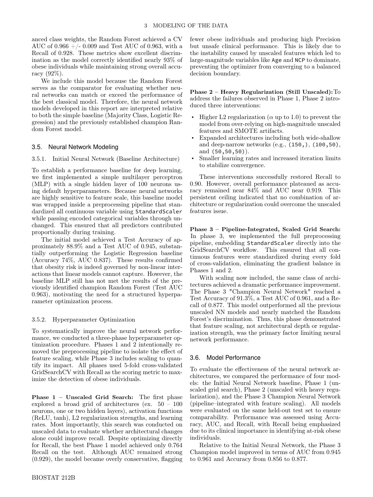
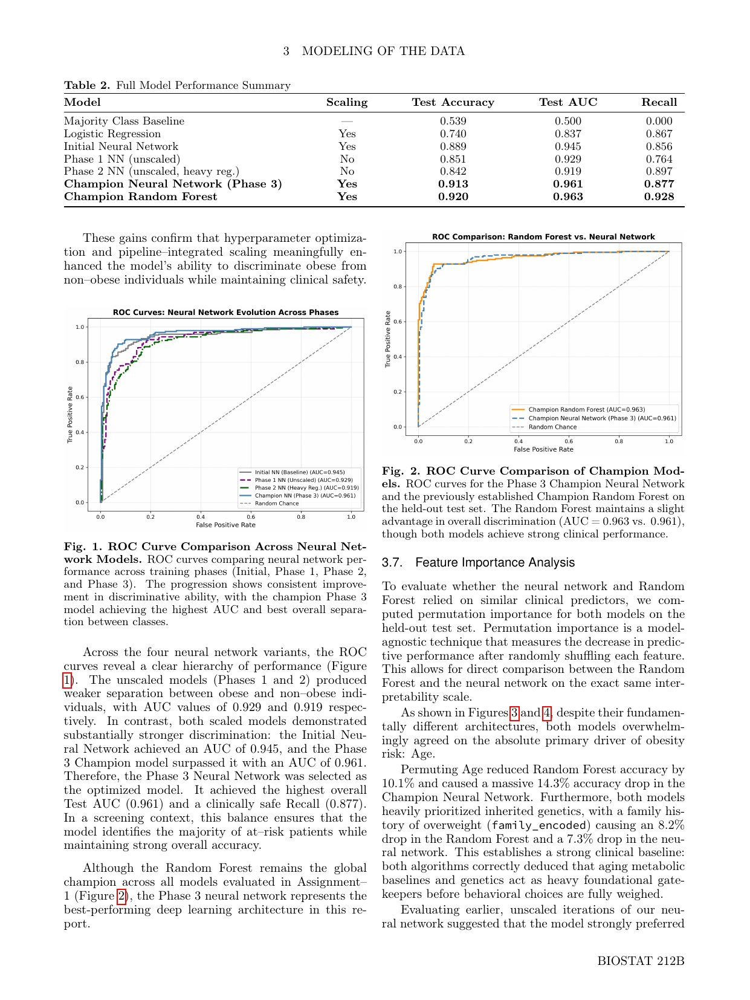
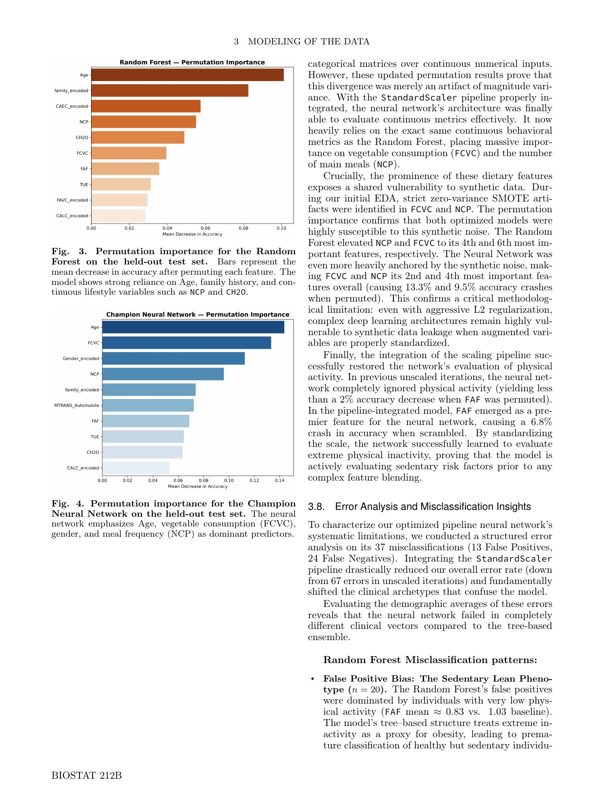
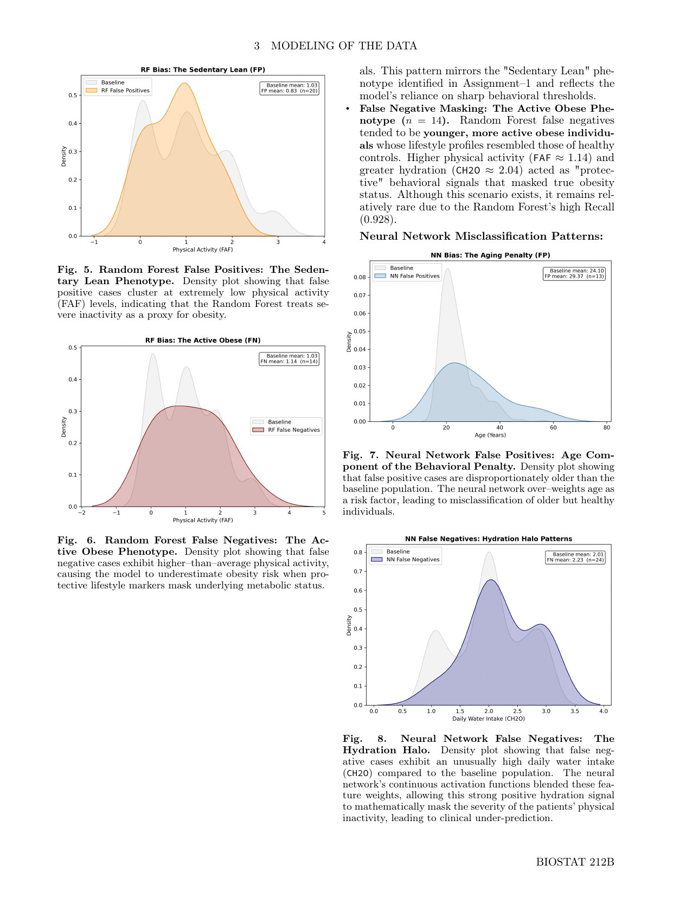
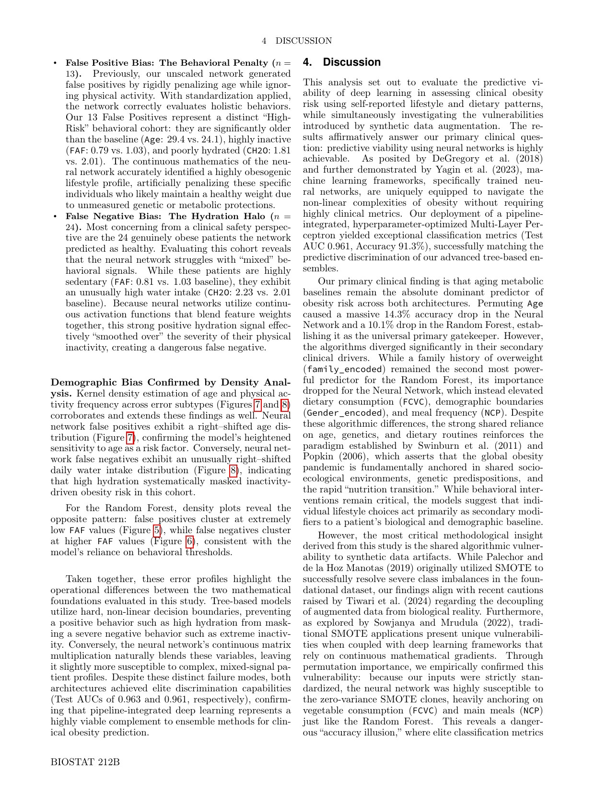
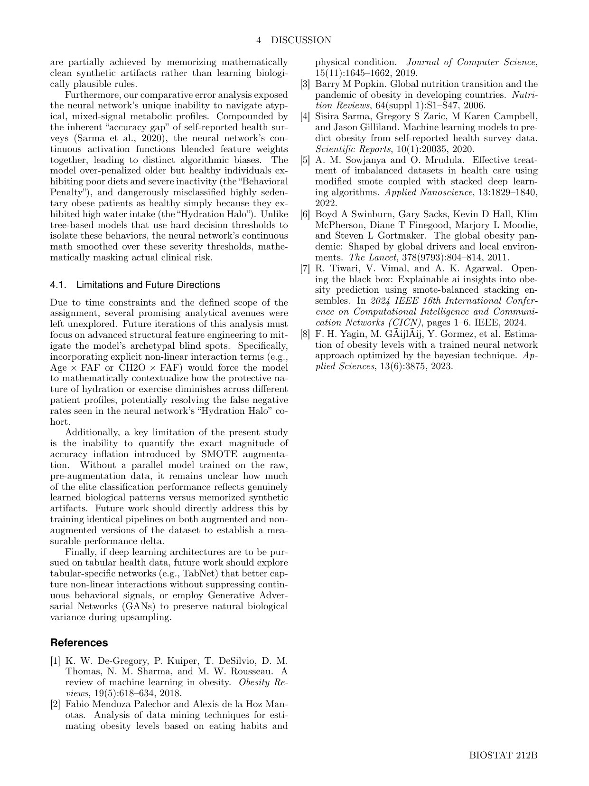

Healthcare data science
Neural Network Obesity Prediction
A latest BIOSTAT 212B report evaluating neural-network architectures for obesity prediction from lifestyle and dietary patterns, with a focus on scaling, hyperparameter optimization, SMOTE artifacts, and misclassification analysis.

- RoleTeam project contributor
- ScopeNeural network modeling, preprocessing pipeline, performance interpretation, feature importance, and error analysis
- FocusClinical safety, synthetic-data leakage, and model interpretability
- OutputPDF research report with figures and methodological discussion
Selected visuals
Inside the work






